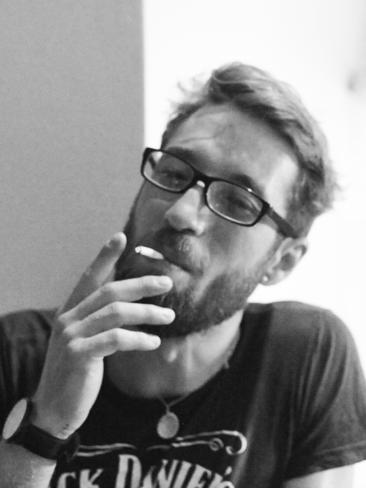

LEBENSLAUF
Max-Joseph Schuster
*******straße 20 a
***** Berlin
Geboren: **.Juni ****, in Augsburg
E-mail: max.sc****@*******
Telefon: 0*********

Ausbildung
- 1999 - 2005 Heinrich-von-Buz Realschule Abschluss: mittlere Reife
- 09/2005 - 02/2008 Ausbildung zum Koch Restaurant zur Goldenen Gans Augsburg Abschluss: Gesellenbrief (gut)
- 09/2013 - 06/2015 BOS Neusäß Abschluss: Fachabitur (2,0)
- 09/2015 - Heute Kommuniktationsdesign Studium, HTW Berlin
Beruflicher Werdegang
- 04/2008 - 06/2008 Grundwehrdienst
1. Luftwaffenausbildungsregiment, Mengen-Hohentengen
- 07/2008 - 02/2010 Koch/ Sous Chef
Offiziersheim Jagdbombergeschwader 32, Lagerlechfeld
- 03/2010 - 04/2011 Koch/ Baarkeeper
Musikkantine GmbH, Augsburg
- 11/2010 - 12/2010 Koch/ Hüttenleitung German Christmas Markets, Edinburg
- 08/2011 - 02/2011 Koch/ Sous Chef
Swiss Cafe and Grill, Pahia, Neuseeland
- 05/2013 - 08/2015 Koch
Parkhäusel Biergarten Augsburg